Content
On the 30th of September we got a alert. The Unseen has started to move again. Their twitter became active and they send a tweet. Their first message since last Dark Harvest. With a picture attached to it.
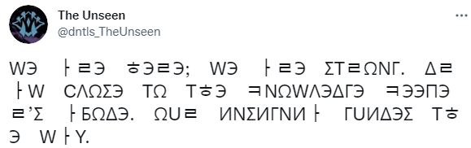 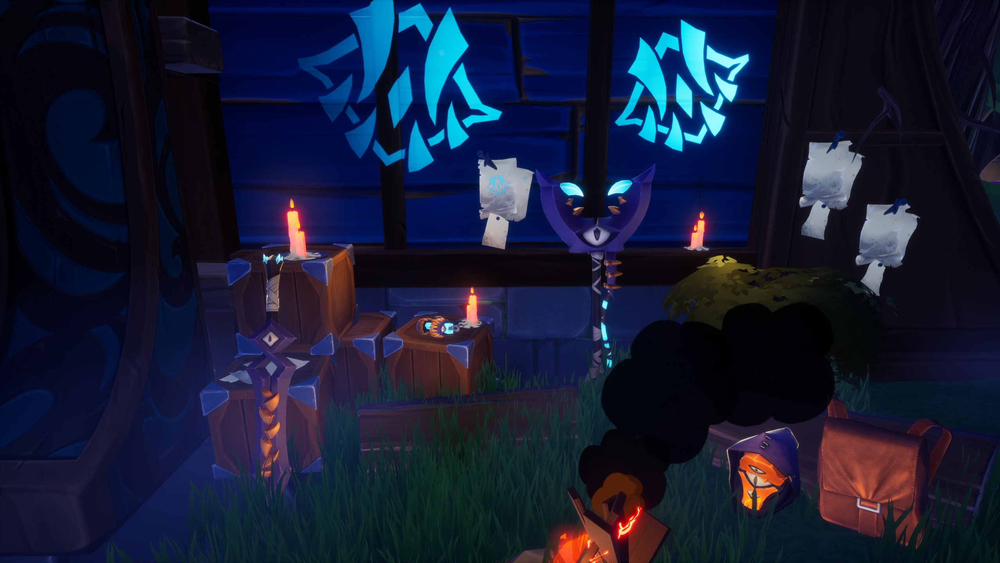They posted a cipher too which reads:
WЭ ㅏㄹЭ ㅎЭㄹЭ; WЭ ㅏㄹЭ ΣTㄹΩNΓ. ΔㄹㅏW CΛΩΣЭ TΩ TㅎЭ ㅋNΩWΛЭΔΓЭ ㅋЭЭΠЭㄹ’Σ ㅏБΩΔЭ. ΩUㄹ ИNΣИΓNИㅏ ΓUИΔЭΣ TㅎЭ WㅏY.
When translated this says: We are here; We are strong. Draw close to the knowledge keeper’s abode. Our insignia guides the way.
This message signifies the return once again of the Unseen Cult. They are once again back trying to recruit people to help with their goal of
reaching the doomsday and they want you to know that you have to follow their symbols so reach the truth. A announcement for the Dark Harvest Event
also appeared when you open the game.
The day after on the 1st of October we got another message from the twitter account.
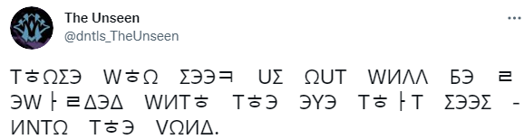 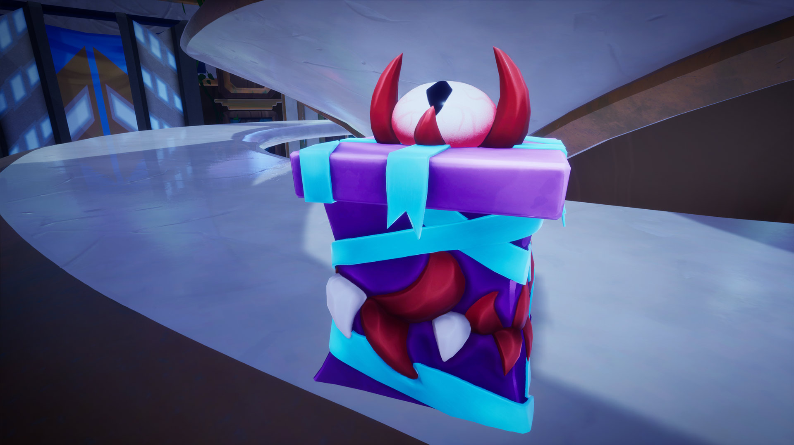They posted a cipher too which reads:
TㅎΩΣЭ WㅎΩ ΣЭЭㅋ UΣ ΩUT WИΛΛ БЭ ㄹЭWㅏㄹΔЭΔ WИTㅎ TㅎЭ ЭYЭ TㅎㅏT ΣЭЭΣ ИNTΩ TㅎЭ VΩИΔ.
When translated this says: Those who seek us out will be rewarded with the eye that sees into the void.
They are now saying that we will be rewarded with the ability to see into the void for those who seek them out. If you look at the picture you can find the location of the
box. It looks like the Vault and Hunt Pass area. When you check that location you can find the box.
And if you go up to it, it will allow you to pick it up and it will then show you this message.
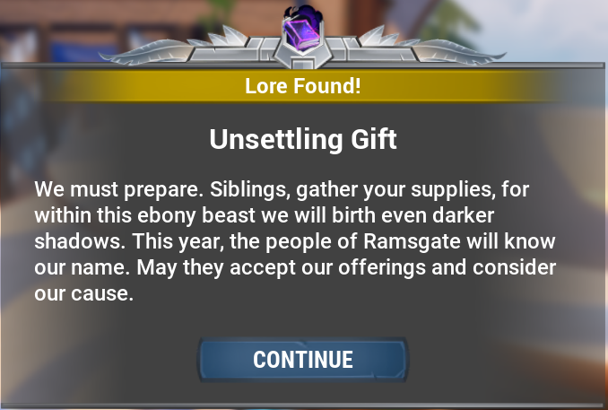They have called all the dormat cultist. They want them to prepare for the upcoming Dark Harvest. This so called "Ebony Beast" could be refering to the Riftstalker which they summon during the first Dark Harvest or it could be refering to the Shrowd. Since they have been known to make Shrowd effigies in the past. They could also be refering to a new behemoth that we have not seen before. Only time will tell.
After looking around we found the notes posted by the Unseen. It was found behind Dr. Shaed Priyani house.
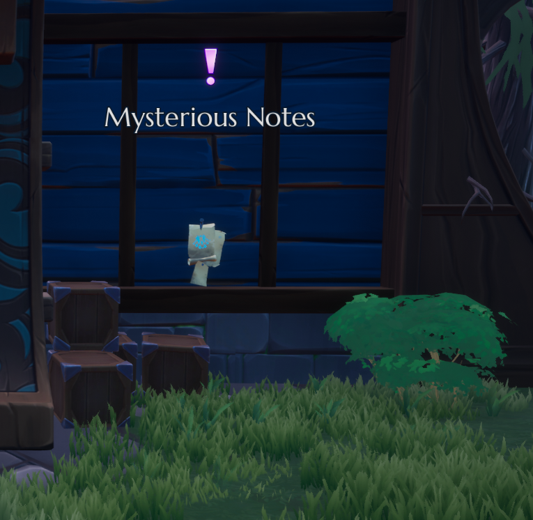This note would give this quest. If you found Box 1, the box you found on top of the Hunt Pass area, then this quest will appear.
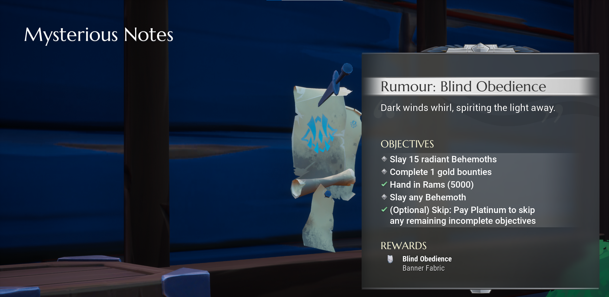You would be rewarded with the Banner "Blind Obedience", then after completing that quest you would be given two other quests "Favor of Sorrow" and "Favor of Darkness".
The day after we get another tweet.
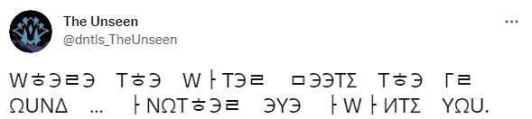WㅎЭㄹЭ TㅎЭ WㅏTЭㄹ ㅁЭЭTΣ TㅎЭ ΓㄹΩUNΔ … ㅏNΩTㅎЭㄹ ЭYЭ ㅏWㅏИTΣ YΩU.
When we translate this, it says: Where the water meets the ground … another eye awaits you.
This is telling us where to find the second box. Whihc can be found where water meets the ground. This could be talking about the different areas around
Ramsgate where there are water running. But it is not a waterfall, but rather a little pipe running water. Besides the Ramsgate entrance and close to the Event
guy.
The isles are slowly drifting into their places. The "long night" is refering to the Dark Harvest and it is upon Ramsgate soon. They also want us to know that they are still here. Also after collecting these two boxes it will led to some Rumors.
This rumor will reward you with the "Unseen Mystery" Flare and the "Unseen Mystery" Sigil.
On the 7th of October we got another tweet by the Unseen Twitter. With a picture attached.
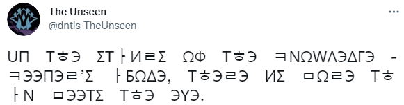 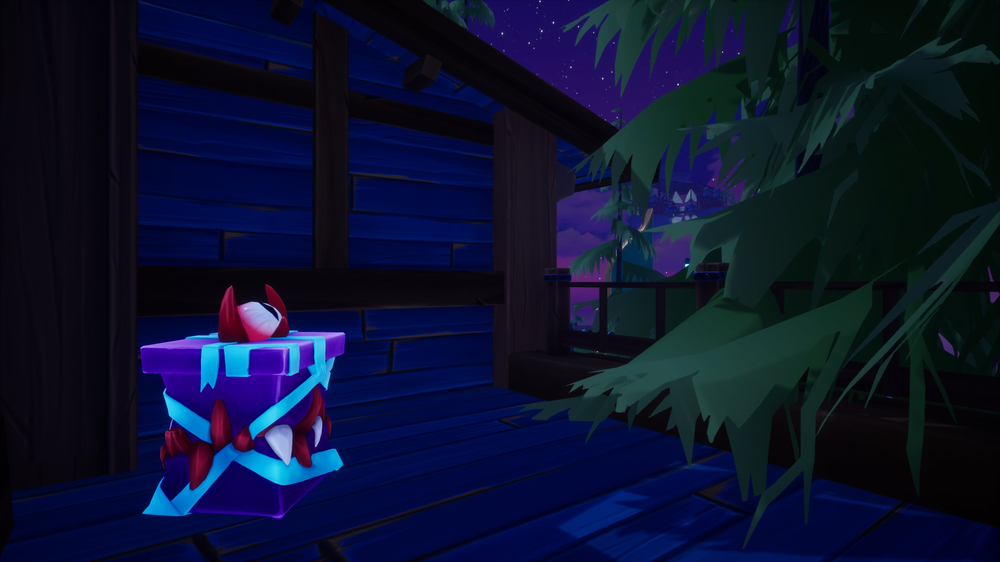UΠ TㅎЭ ΣTㅏИㄹΣ ΩФ TㅎЭ ㅋNΩWΛЭΔΓЭ ㅋЭЭΠЭㄹ’Σ ㅏБΩΔЭ, TㅎЭㄹЭ ИΣ ㅁΩㄹЭ TㅎㅏN ㅁЭЭTΣ TㅎЭ ЭYЭ.
When we translate this, it says: Up the stairs of the knowledge keeper’s abode, there is more than meets the eye.
"Up the stairs of the knowledge keeper's abode" is refering to Dr. Shaed Priyani's house. If you check the roof there you will be able to find the next box above
the Mysterious Notes.
The day of the Dark Harvest is approaching and they are preparing for them meeting again. The once again refere to this "it" who now is described has a "vast body". Making it harder to determine who is the one they are refering to.
This rumor will reward you with the "Triclops Standard" Banner Standard.
On the 9th of October we got another tweet by the Unseen Twitter. With a picture attached.
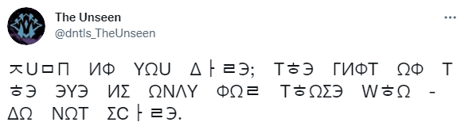 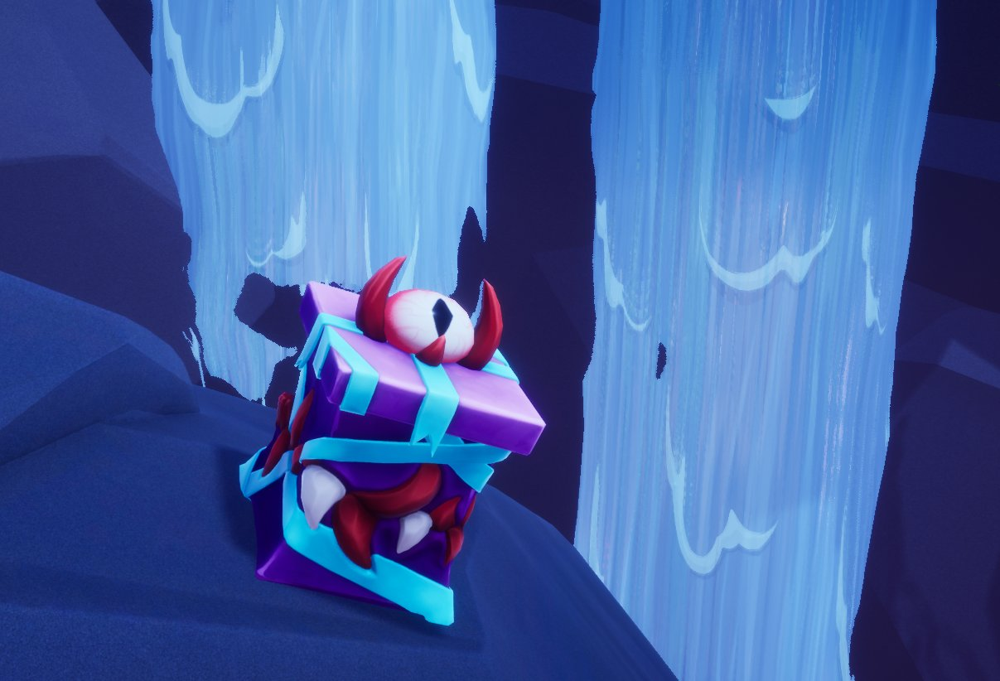ㅈUㅁΠ ИФ YΩU ΔㅏㄹЭ; TㅎЭ ΓИФT ΩФ TㅎЭ ЭYЭ ИΣ ΩNΛY ФΩㄹ TㅎΩΣЭ WㅎΩ ΔΩ NΩT ΣCㅏㄹЭ.
When we translate this, it says: Jump if you dare; the gift of the eye is only for those who do not scare.
This box is found when you jump down from Xeyla's island then you can find the box floating on a rock.
The days of the Dark Harvest is coming closer. They are now calling out to us, they want us to "glimpse beyond the veil" so that we can see the truth. It is as they say "time to grow beyond what we have known". They want us to evolve, to help with their cause.
This rumor will reward you with the "The Unseen" Emote.
On the 16th of October we got another tweet by the Unseen Twitter. With a picture attached.
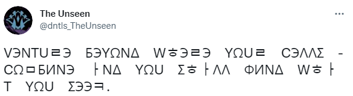 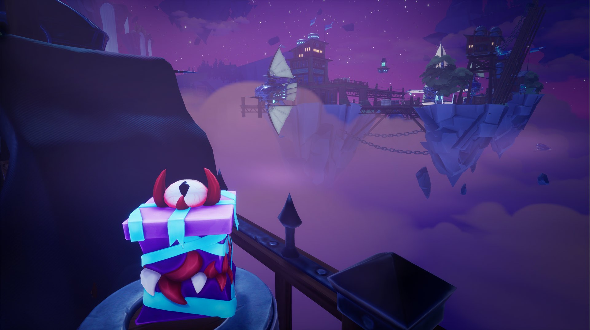VЭNTUㄹЭ БЭYΩNΔ WㅎЭㄹЭ YΩUㄹ CЭΛΛΣ CΩㅁБИNЭ ㅏNΔ YΩU ΣㅎㅏΛΛ ФИNΔ WㅎㅏT YΩU ΣЭЭㅋ.
When we translate this, it says: Venture beyond where your cells combine and you shall find what you seek.
This box is found when you go to the end of the pier near the Middleman.
"We call upon the Bloodshot" is most likely refering to the Bloodshot Shrowd. The Unseen is trying to finish the ritual so that it will correct their "wrongs". Which most likely referes to all their failed attempts to bring doom.
This rumor will reward you with the "The Unseen" Arrival Emote.
On the 17th of October we got the last tweet by the Unseen Twitter. With a picture attached.
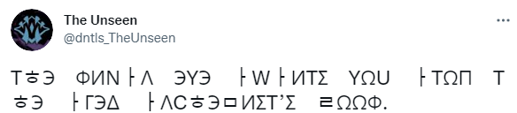 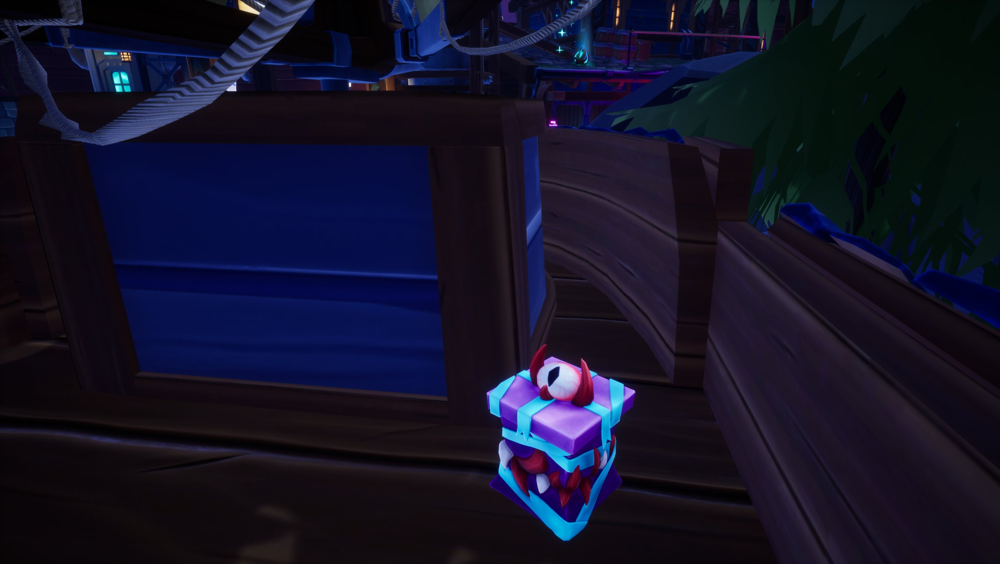TㅎЭ ФИNㅏΛ ЭYЭ ㅏWㅏИTΣ YΩU ㅏTΩΠ TㅎЭ ㅏΓЭΔ ㅏΛCㅎЭㅁИΣT’Σ ㄹΩΩФ.
When we translate this, it says: The final eye awaits you atop the aged alchemist’s roof.
This box is found on top of Granny Strega's shop.
The day of Dark Harvest is upon us vert soon and they are now calling all members. The ritual is about to be complete.
This rumor will reward you with the "Grinning Rictus" Lantern.
These two extra quests was found after completing these two quests named "Favor of Sorrow", "Favor of Darkness", and "Favor of Harvest".
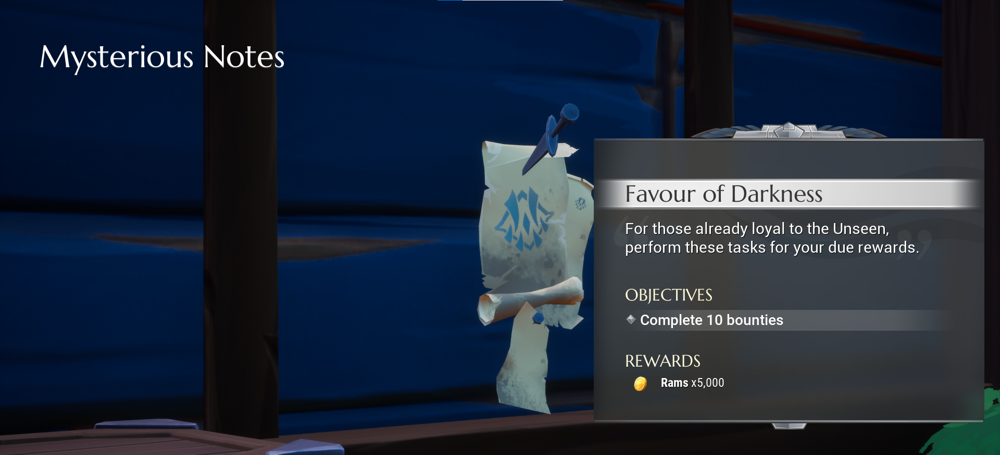 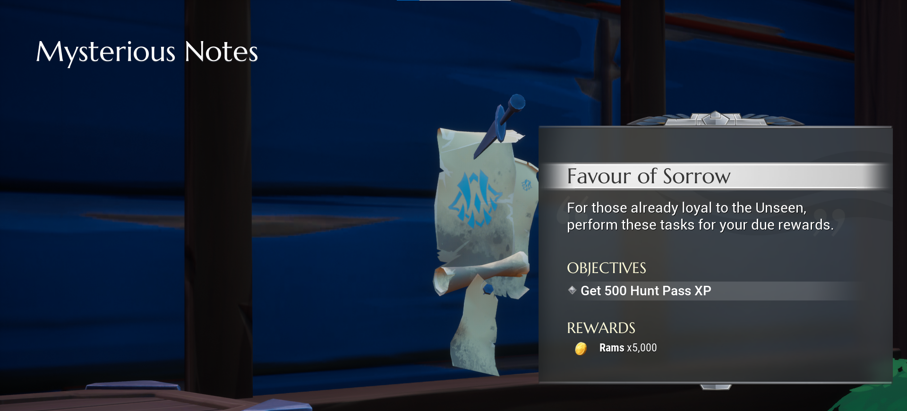 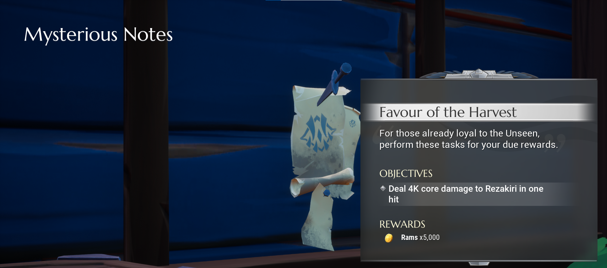Though upon completion these two quests didn't yield any more quests.
The 14th of October, Patch 1.8.0 was dropped and with a picture of the Hunt pass which has some suspisous symbols on them. Apparently these "magic circles" have the unseen letters on them.
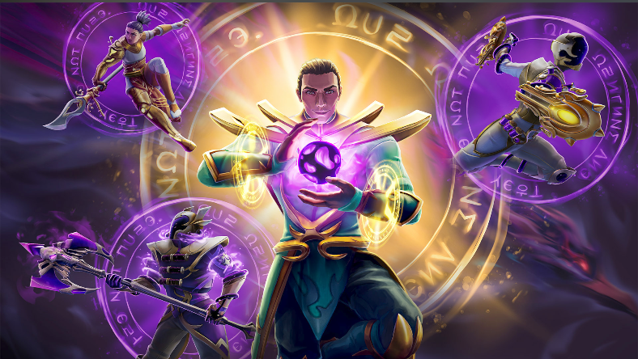ΩUㄹ ΩㄹИΓИNΣ ΛИЭ. TㅎЭY ㅏㄹЭ NΩT ΠUㄹЭ.
When we translate this, it says: Our origins lie. They are not pure.
This message is kinda weird. Since they say "Our origins lie". Not sure if they are talking about making a false statement or if it is their orgin lie somewhere.
Then they go on to say "They", most likely refering to the Unseen, are not pure, this could mean that they are lying about something.
Besides that there was also a new quest.
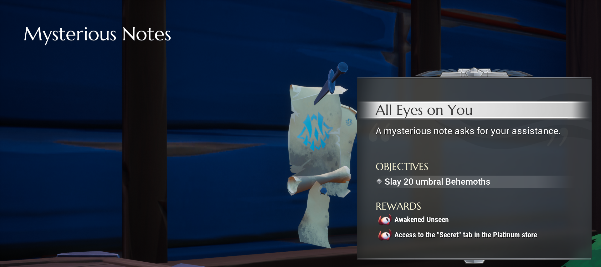Upon completing this quest
You would awaken the Unseen and then you would get the Secret Store, which contains special cosmetics.
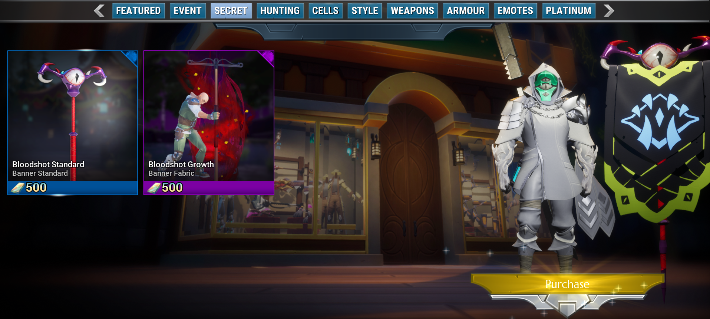After this quest you would be given the quest "Gift of the Night"
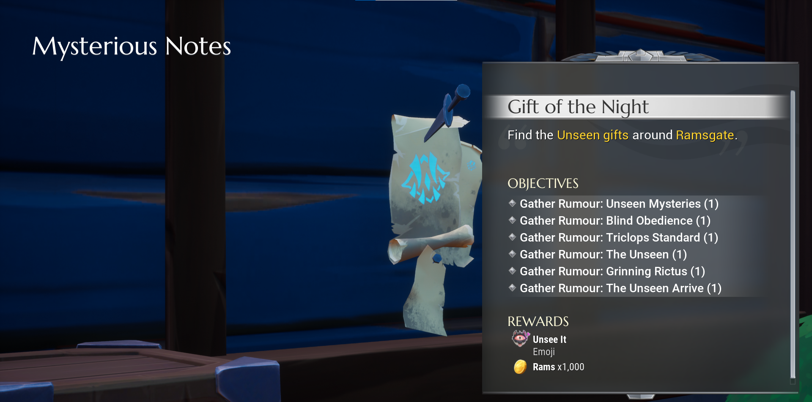Upon completing all the rumors, then you would be rewarded with an emoji and a new quest "A Shot In The Dark"
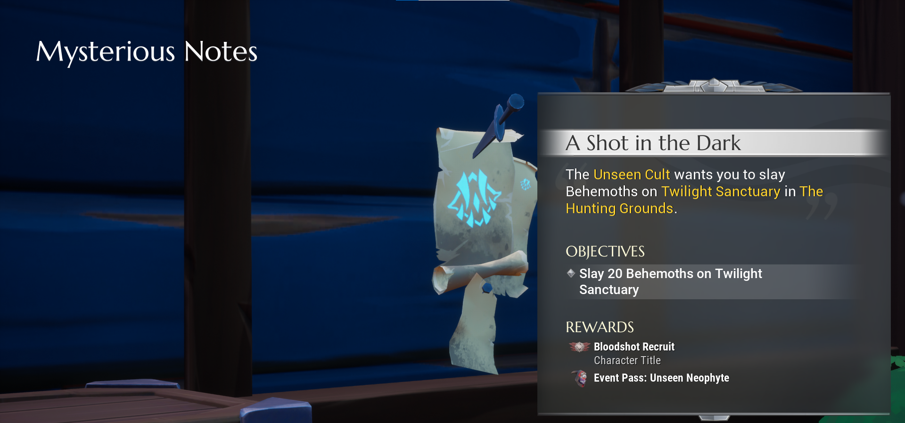Upon completing this quest
You would be rewarded with the a title and a Event Pass.
Here we have some twitter messages, these were sent throughout the days approaching the Dark Harvest.
ㅈΩИN ΩUㄹ CㅏUΣЭ ... TΩΓЭTㅎЭㄹ WЭ WИΛΛ ΣUㅁㅁΩN ΣΩㅁЭTㅎИNΓ ΓㄹЭㅏT.
When we translate this, it says: Join our cause ... together we will summon something great.